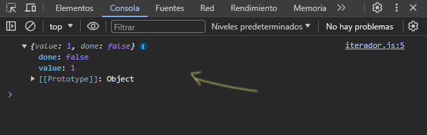
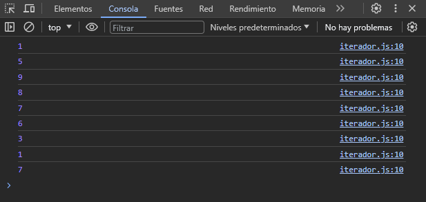

Cualquier tipo que pueda ser "iterable" desde una cadena de texto, un arreglo, un set, un map, se puede acceder a su iterador. Veamos un ejemplo:
const numeros = [1,5,9,8,7,6,3,1,7]
const iterador = numeros[Symbol.iterator]()
Creamos primero un array (iterable), y para poder acceder al iterador del "iterable" definimos una variable y la igualamos al mismo "iterable", en este caso, al array que hemos creado, y como si estuviéramos accediendo a una posición del array escribimos: Symbol.iterator, después del corchete, asignamos unos paréntesis para poder terminar de acceder al iterador del "iterable".
Al tener nuestro iterador, podemos invocar al método .next():
console.log(iterador.next())
Y este método nos devuelve un objeto con dos propiedades llamadas "value" & "done":
En donde "value" sera el valor de cada posición que almacena el "iterable", y "done", es un valor boolean que nos devuelve false siempre y cuando no hemos llegado al ultimo elemento que estamos iterando, devolverá true, cuando ya estemos en el ultimo elemento del iterable.
Para poder recorrer el "iterable" uno por uno, usaremos un ciclo de la siguiente manera:
let next = iterador.next()
while(!next.done) {
console.log(next.value)
next = iterador.next()
}
Primero definimos una variable donde guardaremos el objeto que nos devuelve el metodo .next() y asi poder acceder a sus dos propiedades llamadas "value" & "done".
En este caso, con un bucle while, escribimos la condición que mientras "done" cambie su valor a true, pues se detenga el ciclo. Y solamente mostramos en consola llamando a la propiedad "value" que almacena el valor de cada posición del "iterable".
Por ultimo, volvemos a igualar a iterador.next() a nuestra variable donde almacenamos el objeto que nos devolvía la función .next().
Y ya tenemos a cada elemento recorrido uno por uno mostrado por consola:
